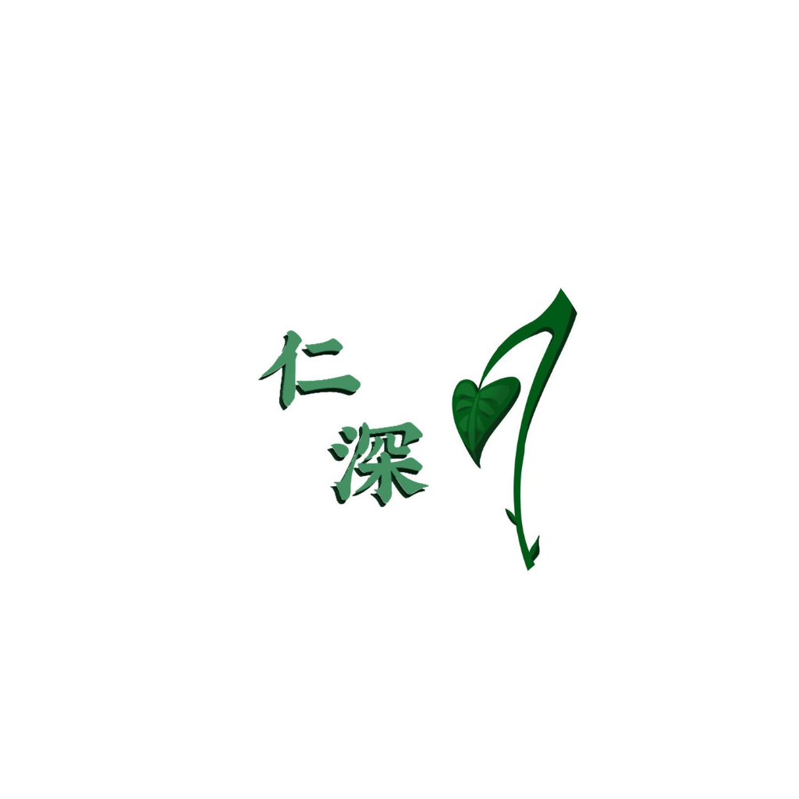

仁 心 仁 術 ． 深 入 淺 出
仁深中醫診所
Clinic & Education Overview
駐診醫師簡介

鄧蕙思
Rachel Tang Wai Sze註冊中醫師
Registered Traditional Chinese Medicine Practitioner
專業資歷
- 香港浸會大學中醫學士 (BCM)
- 現任「THESE HUB文體旅發展研究中心」中醫課程顧問
- 香港都會大學長者學院導師
- 自在人生自學計劃「卓越導師獎」
- 長青活學計劃「卓越導師獎」
臨床專長
內科診症、痛症管理、針灸推拿、體質調理及復位正骨。
專業醫療服務
01
全科門診
感冒咳嗽、腸胃不適、睡眠障礙及皮膚病。
02
針灸推拿
針對五十肩、腰痛、面癱及各類功能調整。
03
傷科正骨
手法復位，針對關節錯位與長期姿勢不良。
04
天灸/婦兒調理
三伏天灸、經後備孕及小兒體質強化。
校園及社區教育
小學：趣味中醫日
- 醒神香囊手作工作坊
- 中藥園戶外實地考察
- 五感辨識草本植物體驗
中學：生涯規劃講座
- 中醫就業前景與JUPAS講座
- 診所影子實習體驗
- 臨床基礎脈診教學
企業/團體講座
- 辦公室伸展與穴位減壓
- 四季養生食療建議